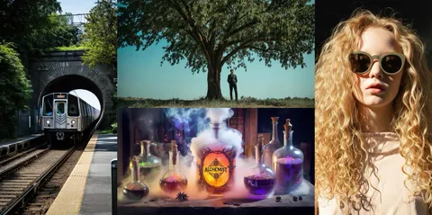
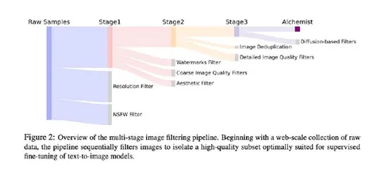
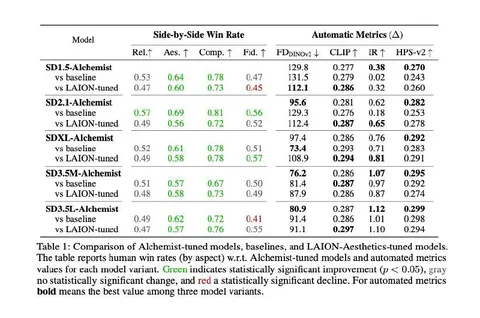

Раньше T2I-модели обучали в один этап — претрейн на большом, довольно грязном датасете интернет-данных. В 2023 году Meta в техрепорте EMU предложили делать файнтюн на маленьком датасете исключительного качества и за счёт этого существенно бустить результат генерации. Правда, они ничего не сказали о том, как такой датасет собрать.
Команда YandexART тоже занималась этой задачей, и сегодня мы делимся результатами своей работы — датасетом Alchemist. Он состоит из 3 350 пар «картинка-текст» и имеет лицензию Apache 2.0, пользуйтесь.
Alchemist сокращает дистанцию между крутыми потюненными закрытыми моделями и открытыми, для которых такой тюнинг недоступен. Ранее сообществу был доступен только пофильтрованный на эстетичность кусочек LAION и файнтюн-датасеты под узкий домен, например аниме или живопись. LAION часто не давал существенного прироста качества, а файнтюны под узкий домен ограничивали возможности генерации за его пределами.
Ниже мы подробно рассказываем, как получить датасет уровня Alchemist, имея лишь сырой набор интернет-данных. Отметим, что весь пайплайн — про картинки. Мы считаем, что так правильно: тексты потом лучше сгенерировать синтетические.
Итак, стартуя с датасета на 10 млрд примеров, мы выбрали картинки высокого разрешения без NSFW-контента и удалили те, что содержали вотермарки, имели низкое качество и были неэстетичны. Когда осталось примерно 300 млн изображений, дальнейшее выкручивание порогов фильтрации не помогало: модели недостаточно чувствительны, чтобы отделять хорошие картинки от великолепных. Выбирать руками лучшее из такого большого набора — тоже сомнительная затея.
На этом этапе мы предположили, что предобученная диффузионка может сама знать, какие картинки хорошие, а какие — не очень. Пробовали подходы из области dataset pruning, например, пропускать картинки через модель и смотреть на значение лосса. Оказалось, что так отбираются только самые простые изображения — абстрактные иллюстрации, вроде обоев на рабочий стол. В них немного деталей и их легко моделировать, но на файнтюне от них мало толку.
В итоге нам пришлось придумать свой метод, суть которого в следующем.
1. Возьмём 1000 картинок из наших 300 млн и разметим на условно плохие (LQ) и хорошие (HQ). Хорошими будем считать те, у которых высокие эстетичность и техническое качество, умеренная наполненность контентом.
2. Смастерим общий промт, который будет содержать перечисление желаемых характеристик: “aesthetic”, “high quality” и т. д.
3. Дальше будем брать LQ- и HQ-картинки, зашумлять их до какого-то t, подавать в нашу предобученую диффузионку вместе с промтом и смотреть, что происходит со значениями в cross-attention.
Оказывается, что на основе нашей небольшой и грубой разметки можно выделить комбинации активаций в cross-attn и токенов, которые будут хорошо отделять изображения с нужными нам свойствами. Если просуммировать эти значения, получим скаляр, который и будет нашим скором качества изображения. Проскорив таким образом 300 млн картинок, мы выбрали топ-3350 — это картинки из нашего датасета.
Дальше осталось сделать тексты — исходные из интернета могут быть ошибочны, содержать лишнюю или упускать нужную информацию. Наше наблюдение: лучше всего работают умеренно подробные промты, похожие на те, которые пишет скорее увлечённый пользователь, чем профессиональный промпт-инженер. YandexVLM как раз умеет подстраиваться под нужный формат. С её помощью мы сгенерировали тексты для каждой картинки, получив датасет Alchemist.
Чтобы убедиться в обобщаемости датасета и метода, мы сделали и выложили файнтюны SD 1.5, SD 2.1, SDXL-base 1.0, SD 3.5 Medium и Large. У всех файнтюнов растёт эстетичность и наполненность генераций, которую мы называем “image complexity”. Подробнее о методике и экспериментах читайте в препринте.
Статью подготовили
CV Time
___
Meta признана экстремистской организацией, а Facebook и Instagram запрещены на территории РФ
